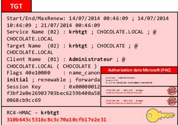

This TGT is encrypted with a key shared between all KDC- The RC4 key for the krbtgt account: 310b643c5316c8c3c70a10cfb17e2e31
The KDC adds a microsoft specific PAC to a structure with user's information

The KDC will create a Microsoft specific structure (PAC) with user information
This PAC is signed with the target key, and the KDC key
For a TGT, the target is also the KDC, so it is they same key
KDC keys are in the krbtgt account